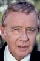

Country:United States, 96 minutes
Spoken languages:
Genres:Horror, Mystery, Thriller
Director(s):Mick Garris
Writer(s):Joseph Stefano
Video Codec:Unknown
Number: 1817


Certification:R
Storyline:
Norman Bates recalls his childhood with his abusive mother on a radio show about boys who commit matricide.
Cast: 


Medium: Bluray,
Comments: Part of: Psycho - Complete 4-Movie Collection
Loaned: No
Aspect ratio: Unknown